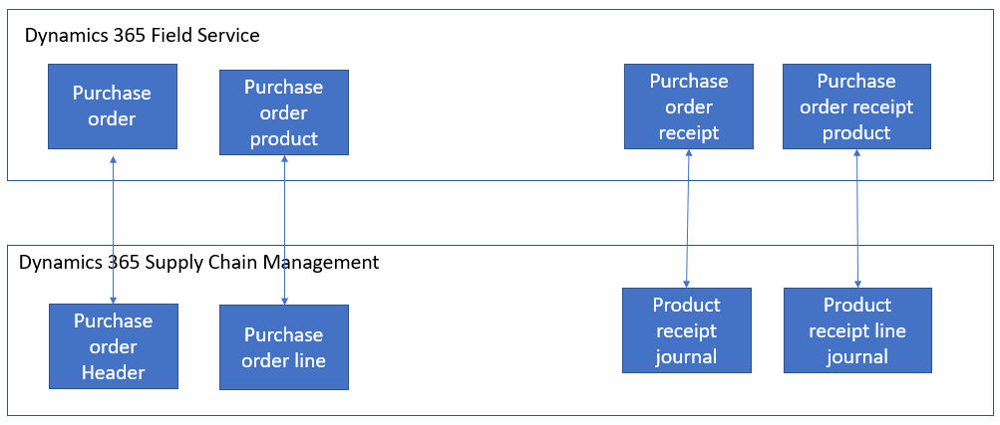

Integrate procurement between Supply Chain Management and Field Service
Important
Some or all of the functionality noted in this topic is available as part of a preview release. The content and the functionality are subject to change. For more information about preview releases, see Service update availability.
Microsoft Dynamics 365 Supply Chain Management provides robust procurement functionality. Dynamics 365 Field Service offers similar functionality that supports the purchasing processes that are associated with the service process. The functionality in these two apps is integrated through dual-write, and the resulting cross-functional use cases are enabled through table mappings, solution logic, views, and forms.
This integration supports purchase order creation and, in most cases, updates from both apps. However, Supply Chain Management controls pricing, addresses, and product receipt. Several powerful cross-functional use cases are enabled for organizations that use both Field Service and Supply Chain Management. These use cases enable procurements to be initiated and tracked across both systems.
The following illustration shows the tables in both systems and how they are mapped to each other. Purchase orders in Field Service reference an account row, whereas purchase orders in Supply Chain Management reference a vendor row. To resolve the integration, dual-write uses a reference to link vendor rows with account rows. For more information, see Integrated vendor master.

Prerequisites
To integrate Supply Chain Management with Field Service, you must install the following components:
- Field Service version 8.8.31.60 or later, for comprehensive purchase order integration
- Supply Chain Management version 10.0.14 or later
- Dual-write, to run the OneFSSCM solution
Installation guidelines
Prerequisites
- Dual-write – For more information, see the Dual-write home page (This is an external linThis link was changed due to HTMLfromRepoGenerator).
- Dynamics 365 Field Service – For more information, see How to install Dynamics 365 Field Service.
When they are enabled in Microsoft Dataverse, dual-write and Field Service introduce several solution layers that extend the environment with new metadata, forms, views, and logic. These solutions can be enabled in any order, though you typically install in the order that is given here:
Field Service Common – Field Service Common is installed when Field Service is installed in the environment.
Field Service (Anchor) – Field Service (Anchor) is installed when Field Service is installed in the environment.
Supply Chain Management Extended – Supply Chain Management Extended is automatically installed when dual-write is enabled in an environment.
OneFSSCM solution – OneFSSCM is automatically installed by whichever solution (Field Service or Supply Chain Management) is installed last.
- If Field Service is already installed in the environment, and you enable dual-write, which installs Supply Chain Management Extended, OneFSSCM is installed.
- If Supply Chain Management Extended is already installed in the environment, and you install Field Service, OneFSSCM is installed.
Initial synchronization
To create new purchase orders and work with existing purchase orders, you must sync the reference data between Supply Chain Management and Dataverse. You use the initial write functionality to detect the table relationships and find the tables that you must enable for a given map.
You must sync the following tables:
Product templates
When you run the initial write, you get a full list of the tables that are required. Here are some examples of these templates:
- All products
- Released products V2
- Dataverse released distinct products
Sites
Warehouses
Procurement categories templates
Here are some examples of these templates:
- Procurement categories
- Pro
- Product category hierarchy
- Product category assignments
Vendor templates, such as Vendor V2
Contact person templates, such as Dataverse Contacts V2
Worker templates, such as Worker
Synchronization of the tables ensures that all documents (purchase orders and product receipts) in Supply Chain Management are available in Dataverse.
Account and Vendor tables
Purchase orders in Field Service rely on the Account table to track vendors. Therefore, the Dataverse tables for purchase orders use accounts to track vendors. To accommodate this key difference, the following four workflows must be activated to keep the accounts and vendors in sync:
- Create Vendors in Accounts table
- Create Vendors in Vendors table
- Update Vendors in Accounts table
- Update Vendors in Vendors table
If OneFSSCM is installed, because both Field Service and Supply Chain Management Extended are installed, these workflows are automatically activated. If Field Service isn't installed, but you want to integrate the purchase order tables with Dataverse, you must activate these workflows. In both cases, unless you start from scratch, you might have to ensure that all vendors are created as accounts in Dataverse before you create purchase orders. Otherwise, errors might occur.
Initial synchronization
After all the prerequisites are in place, if you want existing purchase orders and product receipts to be available in both systems, you must do an initial synchronization of the following templates:
- Purchase Order Header V2
- CDS Purchase Order Line
- CDS Purchase Order Line soft delete
- Purchase Order Receipt
- Purchase Order Receipt Product
Mappings with logic
The procurement integration extends the product mapping with the following logic to ensure that the Field Service Product Type column is correctly set in the products table in Dataverse:
- If Product Type is set to Product, and Item model group, Stocked product is set to True, Field Service Product Type is set to Inventory.
- If Product Type is set to Product, and Item model group, Stocked product is set to False, Field Service Product Type is set to Non-Inventory.
- If Product Type is set to Service, Field Service Product Type is set to Service.
In addition, Dataverse includes logic that maps vendors with their related accounts. This logic sets the default invoice vendor account. On create, server-side plug-in logic sets the default invoice vendor account from the vendor that is related to the account. The vendor has a reference to the invoice account that is used to set this value.
Supported scenarios
Purchase orders can be created and updated by Dataverse users. However, the process and data are controlled by Supply Chain Management. The constraints on updates to purchase order columns in Supply Chain Management apply when updates come from Field Service. For example, you can't update a purchase order if it has been finalized.
If the purchase order is controlled by change management in Supply Chain Management, a Field Service user can update the purchase order only when the Supply Chain Management approval status is Draft.
Several columns are managed only by Supply Chain Management and can't be updated in Field Service. To learn which columns can't be updated, review the mapping tables in the product. For the sake of simplicity, most of these columns are set to read-only on Dataverse pages.
For example, the columns for price information are managed by Supply Chain Management. Supply Chain Management has trade agreements that Field Service can benefit from. columns such as Unit price, Discount, and Net amount come only from Supply Chain Management. To ensure that the price is synced to Field Service, you should use the Sync feature on the Purchase Order and Purchase Order Product pages in Dataverse when purchase order data has been entered. For more information, see Sync with the Dynamics 365 Supply Chain Management procurement data on demand.
The Totals column is available only in Field Service, because there are no up-to-date totals of the purchase order in Supply Chain Management. The totals in Supply Chain Management are calculated based on multiple parameters that aren't available in Field Service.
Purchase order lines where only a procurement category is specified, or where the product that is specified is an item of the Service product type or Field Service product type, can be initiated only in Supply Chain Management. The lines are then synced to Dataverse and are visible in Field Service.
If only Field Service is installed, not Supply Chain Management, the Warehouse column is mandatory on the purchase order. However, if Supply Chain Management is installed, this requirement is relaxed, because Supply Chain Management allows for purchase order lines where no warehouse is specified in certain situations.
Product receipts (purchase order receipts in Dataverse) are managed by Supply Chain Management and can't be created from Dataverse if Supply Chain Management is installed. The product receipts from Supply Chain Management are synced from Supply Chain Management to Dataverse.
Under-delivery is allowed in Supply Chain Management. The OneFSSCM solution adds logic so that, when the product receipt line (or purchase order receipt product in Dataverse) is created or updated, an inventory journal row is created in Dataverse to adjust the remaining quantity that is on order for under-delivery scenarios.
Unsupported scenarios
- Field Service prevents lines from being added to a canceled purchase order in Supply Chain Management. As a workaround, you can change the system status of the purchase order in Field Service, and then add the new line in either Field Service or Supply Chain Management.
- Although procurement rows affect inventory levels in both systems, this integration doesn't ensure inventory alignment across Supply Chain Management and Field Service. Both Field Service and Supply Chain Management have other processes that update inventory levels. Those processes are outside the scope of procurement.
Status management
The statuses of purchase orders in Field Service differ from the statuses in Supply Chain Management.
Field Service purchase order and purchase order product statuses
| Header – System status | Header - Approval status | Item status |
|---|---|---|
|
|
|
Supply Chain Management purchase order and purchase order line statuses
Line approval statuses are active only when there is a line workflow.
| Header – documents status | Header - Approval status | Line status | Line approval status |
|---|---|---|---|
|
|
|
|
The following rules are applied to the status columns:
- The status in Supply Chain Management can't be updated from Field Service. However, in some cases, the status in Field Service will be updated when the purchase order status in Supply Chain Management is changed.
- If a purchase order in Supply Chain Management is under change management, and a change is being processed, the approval status is Draft or In Review. In this case, the Field Service approval status will be set to Null.
- If the purchase order approval status in Supply Chain Management is set to Approved, In External review, Confirmed, or Finalized, the Field Service purchase order approval status will be set to Approved.
- If the purchase order approval status in Supply Chain Management is set to Rejected, the Field Service purchase order approval status will be set to Rejected.
- If the document header status in Supply Chain Management is changed to Open order (Back order), and the Field Service purchase order status is Draft or Cancelled, the Field Service purchase order status will be changed to Submitted.
- If the document header status in Supply Chain Management is changed to Cancelled, and no purchase order receipt products in Field Service are associated with the purchase order (via purchase order products), the Field Service system status is set to Cancelled.
- If purchase order line status in Supply Chain Management is Cancelled, the purchase order product status in Field Service is set to Cancelled. In addition, if the purchase order line status in Supply Chain Management is changed from Cancelled to Back Order, the purchase order product item status in Field Service is set to Pending.
Sync with the Supply Chain Management procurement data on demand
Supply Chain Management includes procurement data that handles trade agreements, discounts, and other scenarios that rely on secondary processes in Supply Chain Management. The procurement engine uses complex rules to determine the best price for a given purchase order. When you use dual-write, data isn't always kept synchronous across the two environments, especially in scenarios where the row was created or updated from Dataverse and might trigger follow-on processes in Supply Chain Management.
Sync the procurement data from Supply Chain Management
- In Dataverse, go to Inventory > Purchase Order.
- Select New to create a new purchase order, or select the row for an existing purchase order.
- From the purchase order or purchase order line.
- On the Action Pane, select Sync.
All columns from Dataverse and Field Service that are shared by Supply Chain Management are synced.
Here are the situations where you might use the Sync function:
- If you make multiple successive changes to the same row from Dataverse, run the Sync function.
- If you aren't sure whether a change might be the second successive change from Dataverse, it might make sense to run the Sync function.
- If you receive an error message about updating a value from Supply Chain Management, run the Sync function, and then retry the update in Dataverse.
Templates
The following templates are available for the integration of procurement-related documents.
| Supply Chain Management | Field Service | Description |
|---|---|---|
| Purchase order header V2 | msdyn_Purchaseorders | This table contains the columns that represent the purchase order header. |
| Purchase order line entity | msdyn_PurchaseOrderProducts | This table contains the rows that represent lines on a purchase order. The product number is used for synchronization. This identifies the product as a stock keeping unit (SKU), including product dimensions. For more information about product integration with Dataverse, see Unified product experience. |
| Product receipt header | msdyn_purchaseorderreceipts | This table contains the product receipt headers that are created when a product receipt is posted in Supply Chain Management. |
| Product receipt line | msdyn_purchaseorderreceiptproducts | This table contains the product receipt lines that are created when a product receipt is posted in Supply Chain Management. |
| Purchase order line soft deleted entity | msdyn_purchaseorderproducts | This table contains information about purchase order lines that are soft-deleted. A purchase order line in Supply Chain Management can be soft-deleted only when the purchase order has been confirmed or approved, if change management is turned on. The row exists in the Supply Chain Management database and is marked as IsDeleted. Because Dataverse doesn't have a concept of soft-deletion, it's important that this information be synced to Dataverse. In this way, lines that are soft-deleted in Supply Chain Management can automatically be deleted from Dataverse. In this case, the logic for deleting a line in Dataverse is located in Supply Chain Management Extended. |
Mapping tables
Mapping types
There are several different mapping types. The following table explains the symbols used in the template tables.
| Symbol | Description |
|---|---|
| > | One-way |
| >> | One-way, and data is transformed in the process. |
| = | Bidirectional |
| >< | Bidirectional, and data is transformed in the process. |
| << | One-way, and data is transformed in the process. |
Filters
The source filter and reverse source filter determine which rows are synchronized.
Default values
If a synchronized field does not exist in either the Finance and Operations table or the other Dynamics 365 table, then a default value is assigned in the synchronized table. In some cases, the default value is an integer that is a lookup to an attribute value in the Common Data Model. For example, in the Contacts table of the Common Data Model, the default value of address1_addresstypecode is 3. In the Common Data Model, for address1AddressTypeCode the value of 3 is Primary address.
Product receipt header to msdyn_purchaseorderreceipts
This template synchronizes data between Finance and Operations apps and Dataverse.
| Finance and Operations field | Map type | Customer engagement field | Default value |
|---|---|---|---|
| RECORDID | >> | msdyn_recordid |
|
| PRODUCTRECEIPTDATE | >> | msdyn_datereceived |
|
| DELIVERYADDRESSLATITUDE | >> | msdyn_deliveryaddresslatitude |
|
| DELIVERYADDRESSLONGITUDE | >> | msdyn_deliveryaddresslongitude |
|
| PURCHASEORDERNUMBER | >> | msdyn_purchaseorder.msdyn_name |
|
| DELIVERYMODEID | >> | msdyn_shipvia.msdyn_name |
|
| DELIVERYTERMSID | >> | msdyn_deliveryterm.msdyn_termscode |
|
| ORDERVENDORACCOUNTNUMBER | >> | msdyn_ordervendor.msdyn_vendoraccountnumber |
|
| REQUESTERPERSONNELNUMBER | >> | msdyn_requesterpersonnel.cdm_workernumber |
|
| ISDELIVERYADDRESSPRIVATE | >> | msdyn_isdeliveryaddressprivate |
|
| DELIVERYADDRESSCOUNTRYREGIONID | >> | msdyn_deliveryaddresscountryregionid |
|
| DELIVERYADDRESSCOUNTYID | >> | msdyn_deliveryaddresscountyid |
|
| DELIVERYADDRESSSTATEID | >> | msdyn_deliveryaddressstateid |
|
| DELIVERYADDRESSZIPCODE | >> | msdyn_deliveryaddresszipcode |
|
| DELIVERYADDRESSNAME | >> | msdyn_deliveryaddressname |
|
| DELIVERYADDRESSTIMEZONE | >> | msdyn_deliveryaddresstimezone |
|
| DELIVERYADDRESSPOSTBOX | >> | msdyn_deliveryaddresspostbox |
|
| DELIVERYADDRESSSTREETNUMBER | >> | msdyn_deliveryaddressstreetnumber |
|
| DELIVERYADDRESSSTREET | >> | msdyn_deliveryaddressstreet |
|
| PRODUCTRECEIPTNUMBER | >> | msdyn_name |
|
| ATTENTIONINFORMATION | >> | msdyn_note |
|
| DELIVERYCITYINKANA | >> | msdyn_deliverycityinkana |
|
| DELIVERYSTREETINKANA | >> | msdyn_deliverystreetinkana |
|
| FORMATTEDDELIVERYADDRESS | >> | msdyn_formatteddeliveryaddress |
|
| DELIVERYADDRESSLOCATIONID | >> | msdyn_deliveryaddresslocationid |
|
| DELIVERYADDRESSCITY | >> | msdyn_deliveryaddresscity |
|
| DELIVERYADDRESSDESCRIPTION | >> | msdyn_deliveryaddressdescription |
|
| DELIVERYADDRESSDISTRICTNAME | >> | msdyn_deliveryaddressdistrictname |
|
| DELIVERYBUILDINGCOMPLIMENT | >> | msdyn_deliverybuildingcompliment |
|
| DELIVERYADDRESSDUNSNUMBER | >> | msdyn_deliveryaddressdunsnumber |
Product receipt line to msdyn_purchaseorderreceiptproducts
This template synchronizes data between Finance and Operations apps and Dataverse.
| Finance and Operations field | Map type | Customer engagement field | Default value |
|---|---|---|---|
| RECORDID | >> | msdyn_recordid |
|
| DELIVERYADDRESSCOUNTRYREGIONID | >> | msdyn_deliveryaddresscountryregionid |
|
| DELIVERYADDRESSCOUNTYID | >> | msdyn_deliveryaddresscountyid |
|
| DELIVERYADDRESSSTATEID | >> | msdyn_deliveryaddressstateid |
|
| EXPECTEDDELIVERYDATE | >> | msdyn_expecteddeliverydate |
|
| EXTERNALITEMNUMBER | >> | msdyn_externalitemnumber |
|
| ITEMBATCHNUMBER | >> | msdyn_itembatchnumber |
|
| ITEMSERIALNUMBER | >> | msdyn_itemserialnumber |
|
| LINEDESCRIPTION | >> | msdyn_linedescription |
|
| ORDEREDPURCHASEQUANTITY | >> | msdyn_orderedpurchasequantity |
|
| PROCUREMENTPRODUCTCATEGORYNAME | >> | msdyn_procurementproductcategory.msdyn_name |
|
| PROCUREMENTPRODUCTCATEGORYHIERARCHYNAME | >> | msdyn_procurementproductcategory.msdyn_hierarchy.msdyn_name |
|
| PRODUCTRECEIPTDATE | >> | msdyn_productreceiptdate |
|
| PRODUCTRECEIPTHEADERRECORDID | >> | msdyn_purchaseorderreceipt.msdyn_recordid |
|
| PRODUCTRECEIPTNUMBER | >> | msdyn_productreceiptnumber |
|
| PURCHASEORDERLINENUMBER | >> | msdyn_purchaseorderproduct.msdyn_lineorder |
|
| PURCHASEORDERNUMBER | >> | msdyn_purchaseorderproduct.msdyn_purchaseorder.msdyn_name |
|
| PURCHASEORDERNUMBER | >> | msdyn_purchaseorder.msdyn_name |
|
| PURCHASEUNITSYMBOL | >> | msdyn_purchaseunitsymbol.msdyn_symbol |
|
| RECEIVEDINVENTORYQUANTITY | >> | msdyn_receivedinventoryquantity |
|
| RECEIVEDINVENTORYSTATUSID | >> | msdyn_receivedinventorystatusid |
|
| RECEIVEDPURCHASEQUANTITY | >> | msdyn_quantity |
|
| RECEIVINGSITEID | >> | msdyn_receivingsiteid.msdyn_siteid |
|
| RECEIVINGWAREHOUSEID | >> | msdyn_associatetowarehouse.msdyn_warehouseidentifier |
|
| RECEIVINGWAREHOUSELOCATIONID | >> | msdyn_receivingwarehouselocation.msdyn_warehouselocationid |
|
| RECEIVINGWAREHOUSEID | >> | msdyn_receivingwarehouselocation.msdyn_warehouse.msdyn_warehouseidentifier |
|
| REMAININGINVENTORYQUANTITY | >> | msdyn_remaininginventoryquantity |
|
| REMAININGPURCHASEQUANTITY | >> | msdyn_remainingpurchasequantity |
|
| PRODUCTNUMBER | >> | msdyn_product.msdyn_productnumber |
Purchase order headers V2 to msdyn_purchaseorders
This template synchronizes data between Finance and Operations apps and Dataverse.
| Finance and Operations field | Map type | Customer engagement field | Default value |
|---|---|---|---|
| DELIVERYADDRESSNAME | msdyn_addressname |
||
| REQUESTEDDELIVERYDATE | msdyn_dateexpected |
||
| PURCHASEORDERNUMBER | msdyn_name |
||
| PAYMENTTERMSNAME | msdyn_paymentterm.msdyn_name |
||
| DEFAULTRECEIVINGWAREHOUSEID | msdyn_receivetowarehouse.msdyn_warehouseidentifier |
||
| ACCOUNTINGDATE | msdyn_accountingdate |
||
| AREPRICESINCLUDINGSALESTAX | msdyn_arepriceincludingsalestax |
||
| ATTENTIONINFORMATION | msdyn_attentioninformation |
||
| CASHDISCOUNTCODE | msdyn_cashdiscountcode |
||
| CASHDISCOUNTPERCENTAGE | msdyn_cashdiscountpercentage |
||
| CONTACTPERSONID | msdyn_contactpersonid.msdyn_contactpersonid |
||
| CURRENCYCODE | transactioncurrencyid.isocurrencycode |
||
| DEFAULTRECEIVINGSITEID | msdyn_defaultreceivingsiteid.msdyn_siteid |
||
| DELIVERYTERMSID | msdyn_deliveryterm.msdyn_termscode |
||
msdyn_email |
|||
| ISCHANGEMANAGEMENTACTIVE | msdyn_ischangemanagementactive |
||
| ISDELIVEREDDIRECTLY | msdyn_isdeliverydirectly |
||
| LANGUAGEID | msdyn_language |
||
| ORDERERPERSONNELNUMBER | msdyn_ordererpersonnelnumber.cdm_workernumber |
||
| REASONCODE | msdyn_reasoncode |
||
| REASONCOMMENT | msdyn_reasoncomment |
||
| TOTALDISCOUNTPERCENTAGE | msdyn_totaldiscountpercentage |
||
| URL | msdyn_url |
||
| VENDORORDERREFERENCE | msdyn_vendororderreference |
||
| VENDORPAYMENTMETHODNAME | msdyn_vendorpaymentmethod.msdyn_name |
||
| VENDORPAYMENTMETHODSPECIFICATIONNAME | msdyn_vendorpaymentmethodspecificationname |
||
| ORDERVENDORACCOUNTNUMBER | msdyn_vendor.accountnumber |
||
| DELIVERYMODEID | msdyn_shipvia.msdyn_name |
||
| INVOICEVENDORACCOUNTNUMBER | msdyn_invoicevendoraccount.accountnumber |
||
| DOCUMENTAPPROVALSTATUS | msdyn_documentapprovalstatus |
||
| PURCHASEORDERSTATUS | msdyn_purchaseorderstatus |
||
| DELIVERYADDRESSCITY | msdyn_city |
||
| DELIVERYADDRESSCOUNTRYREGIONISOCODE | msdyn_country |
||
| DELIVERYADDRESSSTATEID | msdyn_stateorprovince |
||
| DELIVERYADDRESSZIPCODE | msdyn_postalcode |
||
| DELIVERYADDRESSSTREET | msdyn_address1 |
||
| INVOICEADDRESSSTREETNUMBER | msdyn_invoiceaddressstreetnumber |
||
| CONFIRMEDDELIVERYDATE | msdyn_confirmeddeliverydate |
||
| DELIVERYADDRESSLONGITUDE | msdyn_longitude |
||
| DELIVERYADDRESSLATITUDE | msdyn_latitude |
||
| DELIVERYADDRESSCOUNTRYREGIONID | msdyn_deliveryaddresscountryregionid |
||
| DELIVERYADDRESSCOUNTYID | msdyn_deliveryaddresscountyid |
||
| DELIVERYADDRESSDESCRIPTION | msdyn_deliveryaddressdescription |
||
| DELIVERYADDRESSDISTRICTNAME | msdyn_deliveryaddressdistrictname |
||
| DELIVERYADDRESSDUNSNUMBER | msdyn_deliveryaddressdunsnumber |
||
| DELIVERYADDRESSLOCATIONID | msdyn_deliveryaddresslocationid |
||
| DELIVERYADDRESSPOSTBOX | msdyn_deliveryaddresspostbox |
||
| DELIVERYADDRESSTIMEZONE | msdyn_deliveryaddresstimezone |
||
| DELIVERYBUILDINGCOMPLIMENT | msdyn_deliverybuildingcompliment |
||
| FORMATTEDDELIVERYADDRESS | msdyn_formatteddeliveryaddress |
||
| FORMATTEDINVOICEADDRESS | msdyn_formattedinvoiceaddress |
||
| INVOICEADDRESSCITY | msdyn_invoiceaddresscity |
||
| INVOICEADDRESSCOUNTRYREGIONID | msdyn_invoiceaddresscountryregionid |
||
| INVOICEADDRESSCOUNTY | msdyn_invoiceaddresscounty |
||
| INVOICEADDRESSSTATE | msdyn_invoiceaddressstate |
||
| INVOICEADDRESSSTREET | msdyn_invoiceaddressstreet |
||
| DELIVERYADDRESSSTREETNUMBER | msdyn_address2 |
||
| INVOICEADDRESSZIPCODE | msdyn_invoiceaddresszipcode |
purchase order line soft deleted table to msdyn_purchaseorderproducts
This template synchronizes data between Finance and Operations apps and Dataverse.
| Finance and Operations field | Map type | Customer engagement field | Default value |
|---|---|---|---|
| LINENUMBER | msdyn_lineorder |
||
| PURCHASEORDERNUMBER | msdyn_purchaseorder.msdyn_name |
||
| ISDELETED | msdyn_issoftdeletedinscm |
purchase order line table to msdyn_purchaseorderproducts
This template synchronizes data between Finance and Operations apps and Dataverse.
| Finance and Operations field | Map type | Customer engagement field | Default value |
|---|---|---|---|
| REQUESTEDDELIVERYDATE | msdyn_dateexpected |
||
| LINEDESCRIPTION | msdyn_description |
||
| LINENUMBER | msdyn_lineorder |
||
| PRODUCTNUMBER | msdyn_product.msdyn_productnumber |
||
| PURCHASEORDERNUMBER | msdyn_purchaseorder.msdyn_name |
||
| ORDEREDPURCHASEQUANTITY | msdyn_quantity |
||
| LINEAMOUNT | msdyn_lineamount |
||
| PURCHASEPRICE | msdyn_unitcost |
||
| BARCODE | msdyn_barcode |
||
| CATCHWEIGHTUNITSYMBOL | msdyn_catchweightunitsymbol.msdyn_symbol |
||
| CONFIRMEDSHIPPINGDATE | msdyn_confirmedshippingdate |
||
| CUSTOMERREFERENCE | msdyn_customerreference |
||
| CUSTOMERREQUISITIONNUMBER | msdyn_customerrequisitionnumber |
||
| EXTERNALITEMNUMBER | msdyn_externalitemnumber |
||
| ISPARTIALDELIVERYPREVENTED | msdyn_ispartialdeliveryprevented |
||
| LINEDISCOUNTAMOUNT | msdyn_linediscountamount |
||
| LINEDISCOUNTPERCENTAGE | msdyn_linediscountpercentage |
||
| ORDEREDCATCHWEIGHTQUANTITY | msdyn_orderedcatchweightquantity |
||
| PURCHASEORDERLINESTATUS | msdyn_purchaseorderlinestatus |
||
| PURCHASEPRICEQUANTITY | msdyn_purchasepricequantity |
||
| RECEIVINGSITEID | msdyn_receivingsiteid.msdyn_siteid |
||
| REQUESTEDSHIPPINGDATE | msdyn_requestedshippingdate |
||
| REQUESTERPERSONNELNUMBER | msdyn_requesterpersonnelnumber.cdm_workernumber |
||
| PROCUREMENTPRODUCTCATEGORYNAME | msdyn_procurementproductcategory.msdyn_name |
||
| PROCUREMENTPRODUCTCATEGORYHIERACHYNAME | msdyn_procurementproductcategory.msdyn_hierarchy.msdyn_name |
||
| CURRENCYCODE | transactioncurrencyid.isocurrencycode |
||
| CONFIRMEDDELIVERYDATE | msdyn_confirmeddeliverydate |
||
| DELIVERYADDRESSCITY | msdyn_deliveryaddresscity |
||
| DELIVERYADDRESSCOUNTRYREGIONID | msdyn_deliveryaddresscountryregionid |
||
| DELIVERYADDRESSSTATEID | msdyn_deliveryaddressstate |
||
| DELIVERYADDRESSSTREET | msdyn_deliveryaddressstreet |
||
| DELIVERYADDRESSSTREETNUMBER | msdyn_deliveryaddressstreetnumber |
||
| DELIVERYADDRESSZIPCODE | msdyn_deliveryaddresszipcode |
||
| FORMATTEDDELVERYADDRESS | msdyn_formatteddeliveryaddress |
||
| PURCHASEUNITSYMBOL | msdyn_unit.msdyn_symbol |
||
| RECEIVINGWAREHOUSEID | msdyn_associatetowarehouse.msdyn_warehouseidentifier |
||
| DELIVERYADDRESSDESCRIPTION | > | msdyn_deliveryaddressdescription |
|
| DELIVERYADDRESSNAME | > | msdyn_deliveryaddressname |